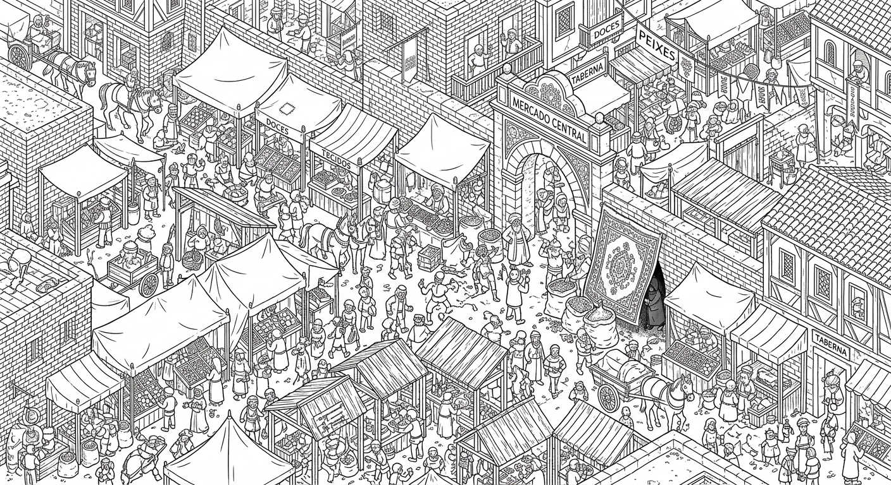

Status: Em investigação
CASO 01: O Mercado Central. A sutil sabotagem: Encontre a pessoa colocando algo misterioso no saco de especiarias de um mercador idoso no caos da feira.

Você encontrou o alvo exato. Este caso está encerrado.
Duração da investigação: 00:00